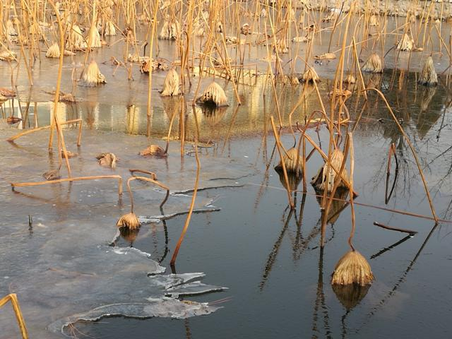
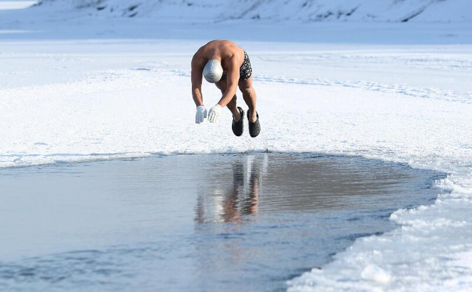
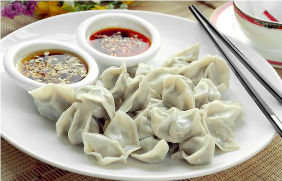

秋去冬来，立冬，是二十四节气的第19个节气。每年11月7、8日之间，太阳位于黄经225°时为立冬节气。立冬后，日照时间将继续缩短，正午太阳高度继续降低。今年的立冬时间是2017年11月7日（农历丁酉年九月十九日）。
旧时，民间习惯以立冬作为冬季的开始，《月令七十二候集解》记载：“立，建始也”，“冬，终也，万物收藏也。”按气候学标准，“立冬为冬日始”的说法与黄淮地区的气候规律基本相符。实际上，除全年无冬的华南沿海和长冬无夏的青藏高原外，各地的冬季并非都始于立冬日。我国最北部的漠河以及大兴安岭以北地区，9月上旬就进入冬季了，而长江流域的冬季要到小雪节气前后才真正开始。
古代将立冬分为三候：“一候水始冰；二候地始冻；三候雉入大水为蜃。” 此时，水已经能结成冰；土地也开始冻结；野鸡一类的大鸟不多见了，而海边却可以看到外壳与雉类线条、颜色相似的大蛤。
立冬前后，我国大部分地区降水显著减少。东北地区大地封冻，农林作物进入越冬期；江淮地区“三秋”已接近尾声；江南正忙着抢种晚茬冬麦、移栽油菜；而华南却是“立冬种麦正当时”。另外，立冬后空气渐趋干燥，土壤含水较少，需加强林区的防火工作。
此时节正是秋收冬种的大好时段，晴好天气有利于晚稻的收、晒、晾及入库质量，冬小麦播种也需要巧用天时。立冬后还需及时做好大棚蔬菜管理，江南及华南地区，需防止冬季涝渍和冰冻危害。立冬节气相关的农事谚语包括：
立冬东北风，冬季好天空。
立冬有雨防烂冬，立冬无雨防春旱。
重阳无雨看立冬，立冬无雨一冬干。
立冬小雪紧相连，冬前整地最当先。
立冬晴，一冬晴；立冬雨，一冬雨。
西风响，蟹脚痒，蟹立冬，影无踪。
立冬种豌豆，一斗还一斗。
立冬前犁金，立冬后犁银，立春后犁铁。
迎冬 古代，人们将立冬与立春、立夏、立秋合称“四立”，是重要的节日。“十月纳禾稼”，农历十月是收获、庆祝和祭祀的时间，也是寒风乍起的季节。旧时农耕社会里，人们劳作一年之后，会利用立冬日休息一下，也是犒赏全家一年来的辛劳，以时令佳品祭祀祖先，祈求上天赐予来年的丰收。古时此日，天子有出郊迎冬之礼，并赐群臣冬衣，对为国捐躯的烈士家人给予表彰和抚恤。
冬泳 今天有些地方以富有新意的方式庆祝立冬。在哈尔滨、商丘、宜春、武汉等地，立冬之日，冬泳爱好者用游泳的方式迎接冬天的到来。冬泳时，人的身体受到冷水刺激后，全身血液循环和新陈代谢就会加强，很多血液被吸入内脏器官及深部组织，这样一些重要脏器的血管就开始扩张；而人的身体为了御冷，皮肤血管很快又扩张，致使大量血液又从内脏流向体表。这样有规律的一张一缩，从而使血管得到锻炼，增强了血管弹性，所以冬泳也被称为“血管体操”。
补冬 立冬意味着草木开始凋零，蛰虫休眠，万物活动趋向休止。立冬进补，在人们心目中是根深蒂固的，为了适应气候的变化，增强体质以抵御严寒，全国各地在立冬日纷纷进行补冬。按照传统的习惯，冬天也是对身体“进补”的大好时节。
南方热补，南方人立冬爱吃些鸡鸭鱼肉。在台湾，立冬这一天，街头的“羊肉炉”、“姜母鸭”等冬令进补餐厅生意红火。闽南地区有中药与鸡鸭合炖的做法，许多家庭会自制麻油鸡、四物鸡来补充能量。
北方吃饺子，以农立国的华夏民族非常重视节气，立冬这一天选择了“好吃不过饺子”。为什么吃饺子？有两种说法：一是“立冬不端饺子碗，冻掉耳朵没人管”；二是“交子之时”吃饺子。“交”就是交替、交接的意思。立冬、除岁，新旧交接的时候都有吃饺子的习俗。
中医认为，少年重养，中年重调，老年重保，耋耄重延。冬令进补还需根据实际情况有针对性地选择清补、温补、小补、大补。冬季对于肾脏的保养十分重要，但需要注意肾虚有阴阳之分，不可盲目进补。按摩是冬季养肾值得一试的有效方法。冬天万物处于“阴盛阳衰”状态，宜进行“日光浴”，以助阳气升发。
四时有序，起居有常。冬天是“养藏”时节，除“温补”养生御寒以外，老年人宜早卧晚起。善于养生的人，除了注意保暖外，冬季仍需坚持锻炼，以取得舒筋活络、畅通气脉、增强自身抵抗力的效果，散步、慢跑、做操、打拳等，都是适合冬季的运动项目。